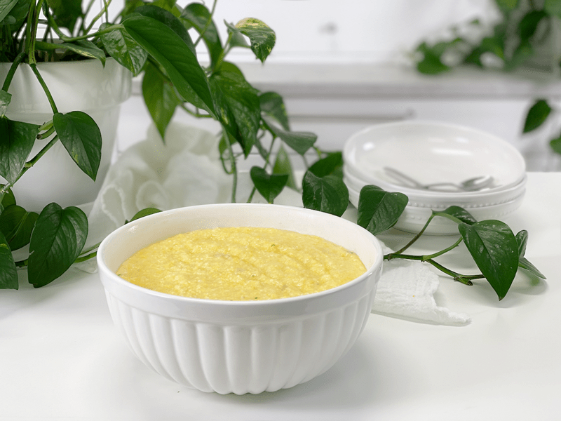
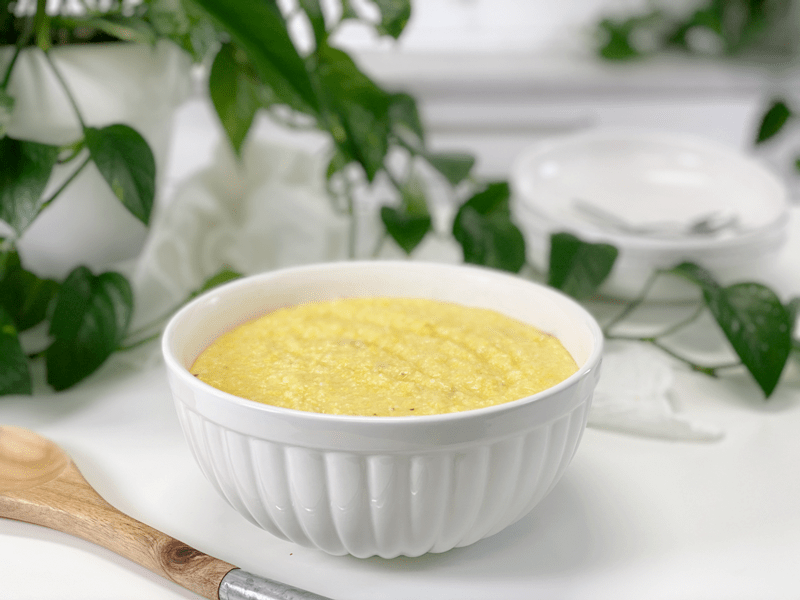
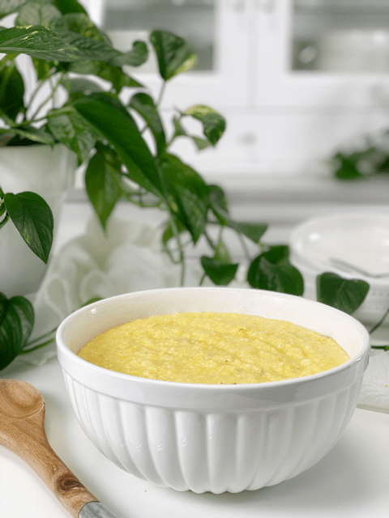
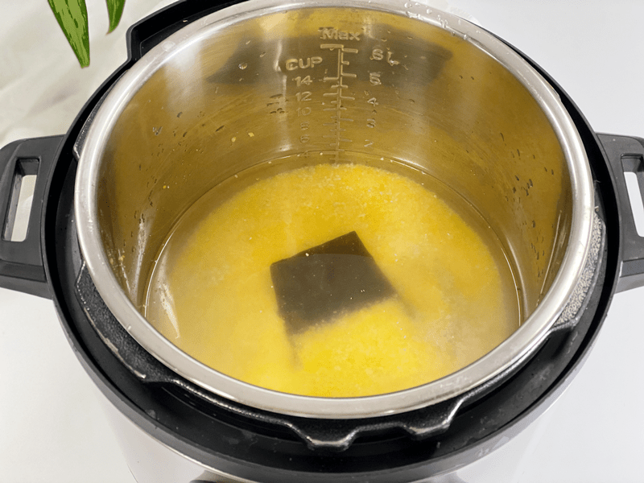
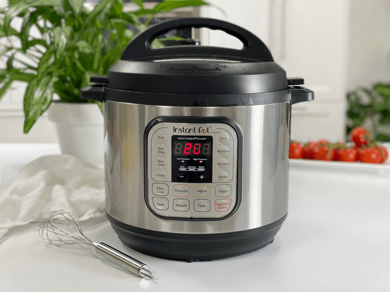
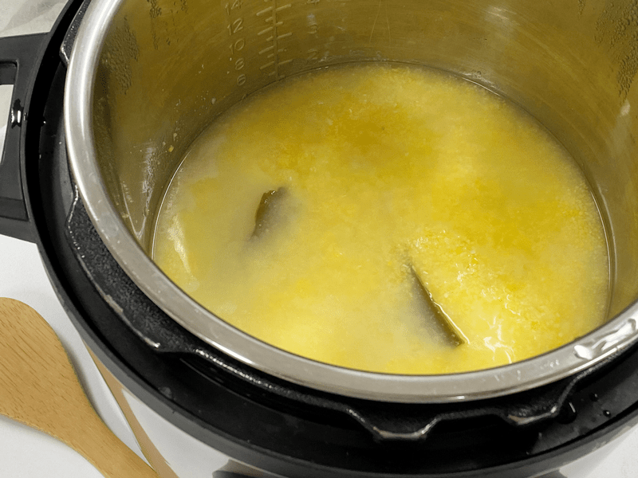
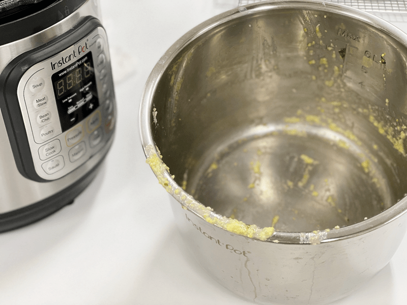

Italian Corn Porridge | Soaked | Instant Pot | Oil-free
Italian corn porridge (aka polenta) has a neutral flavor that makes it so versatile, based on how you cook it. You can use vegetable broth as the cooking base, setting the stage for savory ingredients to follow, or you can cook it in water, which allows you to turn it into a sweet breakfast porridge.

For those of you who have made polenta in the past, you know that it can come with its challenges: it can be lumpy or stick to the pan; the texture can be grainy or chewy; and it loves to spit and sputter at you while it cooks…plus, the bubbling pot needs lots of babysitting. For those reasons alone (or even just one of them) you might detour away from this lovely porridge. I have a foolproof method to make it on the stovetop, which you can find (here). But today, I offer you an even easier way that will give you the same creamy, sought-after results: the Instant Pot method.
Batch Cooking
The following recipe makes 6 1/2 cups of cooked porridge. Let me share with you some different ideas to enjoy the porridge throughout the week.
- If you have a large family, feel free to double the recipe, but ONLY if you have an 8-qt Instant Pot.
- Store the whole batch in the fridge and create morning porridge bowls for breakfast. Each day you add different toppings to add variety to your menu.
- Divide the porridge in half; one half for sweet or savory porridge bowls, and the second half chilled in a shallow baking pan, cut up and baked into french fry shapes or croutons.
- You can also freeze the porridge as a whole or just a partial batch for later enjoyment.
How to Make Perfect Polenta in the Instant Pot
- I use Bob’s Red Mill organic polenta, which is medium-grind cornmeal.
- Do not use quick-cooking or instant polenta.
- I prefer to cook my polenta in water or a vegetable broth base. Milks tend to scorch.
- Allow the pressure to release naturally.
- When it’s done cooking, whisk it quickly and it will turn into a creamy porridge.
- The cooking time isn’t that much shorter in the Instant Pot versus stove top. The main difference is that you can put the ingredients in the Instant Pot, set the functions, and walk away, returning when done cooking.

Soaking Polenta & Cooking with Kombu Seaweed
Reduces Cook Time
- To create the best polenta texture (soft, moist, spreadable, spoonable, and creamy) we need to fine-tune the cooking technique. Part of my technique is to presoak the polenta overnight before cooking it. There’s a twofold benefit to this. First, soaking will fully hydrate the polenta before you start cooking it, which drastically cuts down on the cooking time.
Reduces Phytic Acid
- The second benefit is that soaking helps to reduce the phytic acid found in corn. It’s the same concept as when soaking grains, nuts, seeds, and beans. Many people cook the polenta in the soaking water. Personally, I rinse it to remove any tang from the apple cider vinegar. Since the grains are small, you will want to drain it through a nut bag.
Increase the Flavor
- As mentioned above, soaking polenta softens each grain, which in turn maximizes flavor.
Cooking with Kombu Seaweed
- Kombu is a type of sea kelp that is rich in vitamins and minerals, including potassium, calcium, and iodine. It has a very mild flavor, not what you might expect from a seaweed. Kombu can be eaten if you want the added nutrition. Just dice it up and stir it into your dish. You can also save it in the fridge after the porridge has cooked and reuse it a couple of times before tossing it.
I hope I have encouraged you to try Italian corn porridge, regardless of what cooking method you use, I have a feeling you will be thrilled with the outcome. Please leave a comment below and have a blessed day. amie sue

Ingredients
Yields 4 1/4 cups
- 1 cup organic Italian cornmeal (polenta)
- 5 cups water
- 1 tsp sea salt
- 1 strip kombu seaweed
Preparation
Presoak the Polenta
- In a glass bowl combine 2 Tbsp raw apple cider vinegar, 4 cups water, and 1 cup polenta. Give it a quick stir.
- Cover with a dishcloth and let sit at room temperature for 12 to 24 hours.
- Rinse the polenta in a tightly woven nut bag to remove the tangy flavor. Some choose to cook the polenta in the soak water. Personally, I strain the soak water and use fresh water when cooking.
Instant Pot Method
- Add the polenta, water, kombu, and salt to the Instant Pot. Stir well. I use an 8-quart machine, for reference.
- Secure the lid and turn the pressure valve to the “sealing” position.
- Select “Manual,” adjust the cooking time to 20 minutes at high pressure.
- Once the machine beeps at the end of the cooking process, allow the Instant Pot to naturally release pressure (about 15 minutes).
- The reason for this is that the polenta continues to cook as the pressure releases.
- Also, flipping the pressure valve too soon can dangerous because the internal liquid can sputter out the pressure valve, making a mess and possibly burning you. Let’s just be safe and patient.
- When pin on top of the lid has dropped, you can remove the lid and the kombu seaweed.
- I prefer to remove the seaweed, diced it up small, and add it back in for the additional nutrients. Or you can save it in an airtight container and throw it in the next pot of grains or beans you cook.
- Stir well with a flat-edged wooden spoon.
- For creamy polenta, serve right away. If you prefer grilled or baked polenta, spread the porridge into a greased 9×13 pan and chill, covered overnight.
- Storing: When it comes to storing hot foods in the fridge, we have a 2-hour window. Large amounts of food should be divided into small portions and put in shallow containers for quicker cooling in the refrigerator that is set to 40 degrees (F) or below. If you leave food out to cool and forget about it after 2 hours, throw it away due to the growth of bacteria. (source)
- It should keep for at least 4 or 5 days in the fridge and can be frozen for up to 3 months.
-

-
Add the water, polenta, kombu seaweed, and salt to the pot.
-

-
Secure the lid, press “Manual,” adjust cooking time to 20 minutes on “High Pressure,” and go find something to do for 20 minutes.
-

-
Once all the pressure has naturally released, remove the lid. There will be water standing on top, which is normal. Either remove or keep the kombu in the porridge and stir everything together.
-

-
As you can see, the porridge didn’t stick to the bottom of the pot. Sorry for the blurry photo.
-
-
Creamy and perfectly cooked!
© AmieSue.com